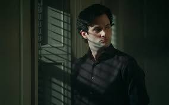
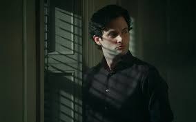

¿Quien es Joe Goldberg?
Joe Goldberg es el protagonista de la serie YOU, interpretado por Penn Badgley. A primera vista, parece un hombre amable y culto, pero detras de su sonrisa se esconde una mente obsesiva, controladora y manipuladora. Su idea del amor lo lleva a cometer actos impensables en nombre de la "proteccion".
Momentos iconicos
A lo largo de la serie, Joe demuestra ser tanto un narrador encantador como un personaje perturbador. Sus pensamientos internos nos revelan lo que no se atreve a decir en voz alta. Algunos momentos inolvidables incluyen:
- Su obsesion con Beck en la primera temporada.
- Su relacion con Love Quinn, que se torna tan peligrosa como el.
- Su intento de comenzar una nueva vida en Londres bajo una nueva identidad.
Galeria
 

Frases de Joe Goldberg
"A veces, lo que mas amas es lo que mas te destruye."
"El amor no se trata de lo que sientes, sino de lo que haces para mantenerlo."
Interactividad
¿Quieres descubrir un secreto sobre Joe? Haz clic en el boton...
Formulario de contacto
Joe quiere saber quien eres... (por curiosidad, claro)